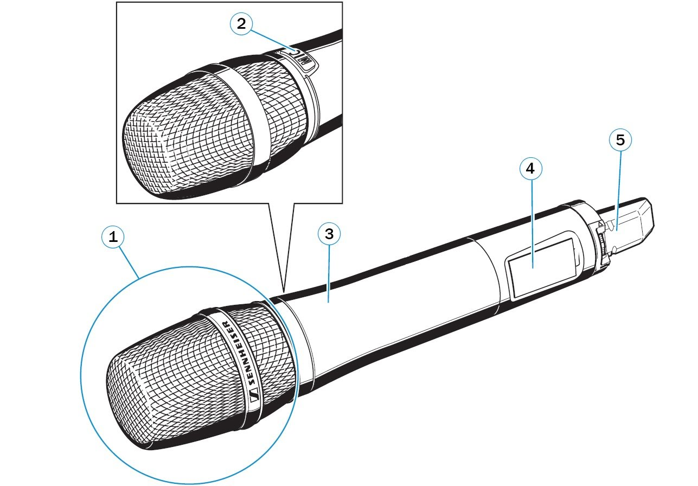
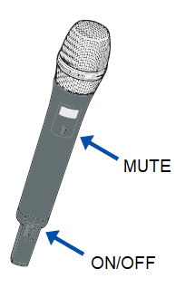
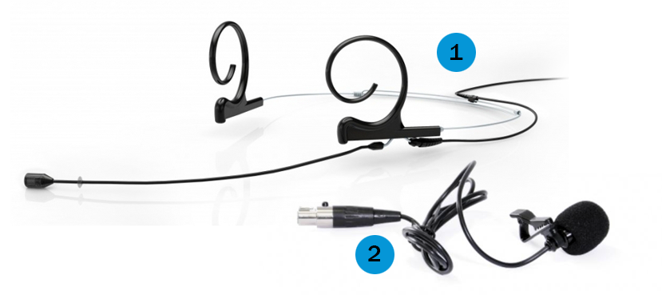
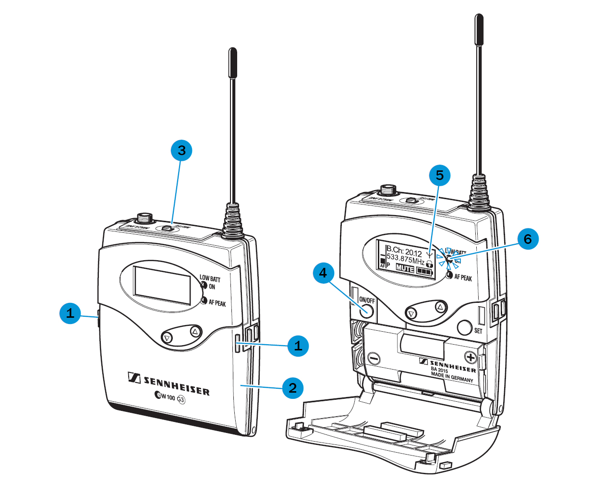
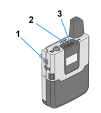
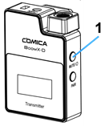

Mikrofony¶
Pokud chcete, aby Vaše nahrávka měla kvalitní zvuk, doporučujeme Vám používat mikrofony. Ty jsou dostupné v každé učebně komplexu CARLA (tedy v učebnách, jejichž název začíná na A a B2).
V učebnách můžete najít čtyři typy mikrofonů:
- Ruchový mikrofon – jeho umístění se liší, nejčastěji se nachází na katedře nebo u kamery. Zapíná se automaticky, pokud pokud není aktivní žádný jiný mikrofon. Musíte mít však na paměti, že je nejméně kvalitní a pokud nestojíte přímo u něj, nelze zaručit srozumitelnost zvukové části nahrávky.
- Ruční mikrofon – je nutné jej neustále držet v ruce, výsledný záznam je však kvalitnější.
- Klopový mikrofon – připíná se na oblečení, zvukový záznam je kvalitnější než u ruchového mikrofonu, může však být slyšet rušivé tření o textil.
- Náhlavní mikrofon – nasazuje se za uši, je lehký a dá se nastavit na velikost hlavy; k jeho přednostem patří vedle vysoké kvality zvuku i to, že přednášející může zapomenout, že jej má.
V každé učebně vybavené záznamovým zařízením najdete náhlavní nebo klopový mikrofon. V některých učebnách je navíc k dispozici i mikrofon ruční.
V učebnách doporučujeme využívat primárně náhlavní a klopové mikrofony, které poskytují nejvyšší kvalitu zvuku. Ruční mikrofon využijete především ve chvíli, kdy si mikrofon potřebuje předávat více mluvčích.
Kde jsou mikrofony umístěny¶
Mikrofony jsou umístěny v boční skříňce katedry, kterou otevřete pomocí přístupové karty učebny nebo své karty ISIC, případně pomocí klíčku, který dostanete spolu s klíči od učebny. V některých učebnách jsou mikrofony uloženy přímo na katedře (B2.13) nebo v samostatné skříňce (C33).
Jak mikrofony vypadají a jak se používají?¶
Ruční mikrofon¶
Ruční mikrofon (neboli handka) se skládá z hlavy mikrofonu (1), tlačítka na ztišení mikrofonu s nápisem (2), dále pak z těla mikrofonu (3), displeje (4), který zobrazuje mj. informace o stavu baterie, a antény mikrofonu (5). Mikrofon držte tak, abyste nepřekrývali anténu a displej.
[
Budovy A a B¶
Ruční mikrofon se zapíná dlouhým podržením červeného tlačítka na spodní straně těla mikrofonu (viz obr. 2). Jakmile je zapnut, rozsvítí se jeho displej oranžově. Důležité je, aby tlačítko s nápisem MIC svítilo červeně – pokud nesvítí, mikrofon je ztišen (MUTE). Ztišený mikrofon nepřenáší žádný signál, tudíž nebude na nahrávce slyšet.

oficiální manuál firmy Sennheiser.
Budovy C, D, G, J, M a N¶
Ruční mikrofon se zpravidla aktivuje sám po vytažení z nabíjecí stanice. Vyčkejte několik vteřin, než dioda pod displejem mikrofonu zezelená.
Pokud dioda nesvítí, zapněte mikrofon krátkým stisknutím tlačítka ON/OFF na spodní straně těla mikrofonu.
Svítí-li dioda žlutě, mikrofon je ztišený. Do provozu jej uvedete tlačítkem MUTE pod displejem mikrofonu. Stejným tlačítkem můžete mikrofon ztišit v průběhu přednášky.
Pro vypnutí mikrofonu přidržte dlouze tlačítko ON/OFF na spodní straně těla mikrofonu.

oficiální manuál firmy Sennheiser.
Náhlavní a klopový mikrofon¶
Oba tyto mikrofony, které můžete vidět na obrázku 3, jsou připojeny k přijímači, který lze umístit za pásek případně do kapsy. Náhlavní mikrofon (1) si jednoduše nasadíte na uši tak, aby samotný mikrofon byl umístěn asi 3 cm od úst.
Klopový mikrofon (2) klipsou přichytíte k oblečení (nejlépe k lemu košile nebo trička), v ideálním případě by neměl třít o látku.

firmy Sennheiser.
Ovládací prvky náhlavního a klopového mikrofonu jsou umístěny na přijímači. Typ přijímače se liší podle budovy.
Budovy A a B¶
Přijímač otevřete pomocí dvou tlačítek (1), která zmáčknete zároveň. Tímto se uvolní kryt na baterii (2), který odhalí zapínání a vypínání (4). Tlačítko “ON” / “OFF” stačí chvíli podržet a zařízení se zapne (a vice versa). Rozsvítí se display (5), na kterém vidíte informace o mikrofonu. Pro Vás jako uživatele jsou důležité dva údaje – je-li mikrofon ztišen (pokud je mikrofon ztišen, svítí na displayi nápis MUTE, hlasitost upravíte páčkou na horní části přijímače v bodě 3), a jaký je stav nabití baterie (klasická ikona baterie s ubývajícími články). Pokud je baterie slabá, bude blikat červená dioda (6) a je nutné zavolat technika, aby Vám dal jiný přijímač.

Budovy C, D, G, J, M a N¶
Mikrofon se zpravidla aktivuje sám po vytažení z nabíjecí stanice. Vyčkejte několik vteřin, než dioda na vrchní straně přijímače (2) zezelená.
Pokud se dioda nerozsvítí, zapněte mikrofon krátkým stisknutím tlačítka ON/OFF (1).
Svítí-li dioda žlutě, mikrofon je ztišený. Do provozu jej uvedete přepnutím tlačítka MUTE (3) na horní straně přijímače. Stejným tlačítkem můžete mikrofon ztišit v průběhu přednášky.
Pro vypnutí mikrofonu dlouze přidržte tlačítko ON/OFF (1).

Budovy K a L¶
Některé učebny v budovách K a L jsou vybaveny bezdrátovým klopovým mikrofonem. Mikrofon je zapojený do katederního PC a lze jej použít v aplikacích spuštěných na tomto počítači (typicky videokonferenční aplikace).
Které učebny jsou mikrofony vybavené, můžete zjistit v katalogu učeben FF MU.
Bezdrátový mikrofon zapnete i vypnete přidržením tlačítka ON/OFF na boku přijímače (obr. 7, bod 1).

Jak mikrofony správně umístit do adaptéru¶
Mikrofony je třeba umístit do nabíječky tak, aby diody na nabíječce svítily (viz červené diody na obr. 5). Pokud dioda nesvítí, zkontrolujte, zda není mikrofon není v držáku posazený na volno, nebo jej zkuste otočit. Po každém použití je třeba vložit mikrofon do nabíječky, aby se dobil a byl připraven pro další použití.
Červená dioda znamená, že mikrofon se dobíjí, naopak zelená ukazuje, že mikrofon je zcela nabitý a jeho baterie vydrží celou přednášku.

music](http://www.dmmusic.com/sennheiser-l2015-base-charger-unit){:target=”_blank”}.
FAQ¶
Co dělat, když je mikrofon vybitý, svítí červeně nebo nefunguje vůbec?
Pokud nastane jakýkoliv problém, ozvěte se správci AV techniky Petru Čučkovi na tel. 777 364 127 a popište mu svůj problém. Poté Vám přijde některý z techniků pomoci.
Mikrofon není na daných místech. Co dělat?
Oznamte tento problém správci AV techniky Petru Čučkovi, kterého naleznete na tel. čísle 777 364 127.
Co dělat, když mikrofon vydává nepříjemné zvuky?
Mikrofon může občas “chytat” zpětnou vazbu. Pokud se Vám něco takového přihodí, zkuste nejprve na dotykovém panelu zeslabit zvuk. V případě, že se nic nezmění, můžete vyzkoušet jiný mikrofon. Jsou dvě skutečnosti, které mohou tento jev způsobovat: buď jste se s mikrofonem příliš přiblížili reproduktorům, nebo je špatně nastavena citlivost mikrofonu. Pokud ani po změně pozice a následném zeslabení mikrofonu na dotykovém displeji nepříjemný zvuk zpětné vazby nepřestane, zavolejte správci AV techniky Petru Čučkovi na tel. 777 364 127. Dojde Vám pomoci některý z techniků, který pak na mikrofonu přenastaví citlivost, která hučení mikrofonu způsobuje.